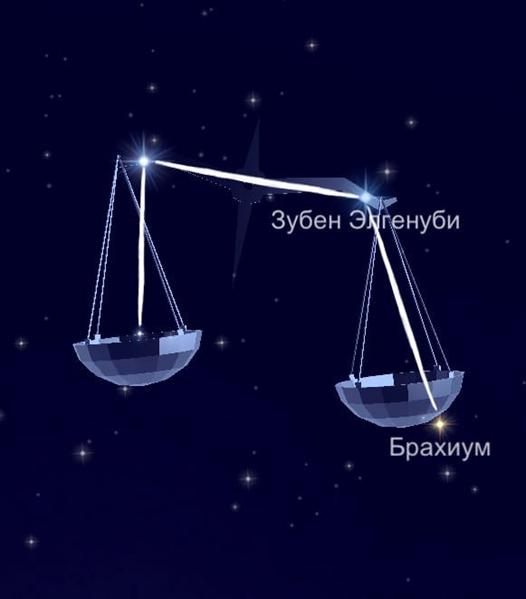

На небе созвездие Весов лежит между Скорпионом и Девой. Так же как и они относится к зодиакальному кругу. К тому же, соседствует с Волком, Гидрой, Змееносцем, Центавром и головой Змеи. К тому же, по размеру Весы стоят на 29 месте. Действительно, ведь они занимают 538 квадратных градусов Южного полушария.
Миф о происхождении.
Весы символизируют равновесие и являются одним из самых древних созвездий. Весы - символ правосудия в руках Девы, но одновременно ассоциируются с осенним равноденствием. В этот день длительность дня равняется длительности ночи (т.е. солнце и луна находятся в равновесии).
Звёзды, образующие созвездие Весы.
Яркие звёзды этого участка образуют прямоугольник. Который, в свою очередь, является основой знака созвездия Весы.
Альфа — двойная звезда Зубен эль Генуби. Бета — это Зубен эль Шемали.
Гамма-Зубен эль Акраб, Ипсилон и Тета Весов представляют собой оранжевых гигантов.
Звезда Брахикум выступает Сигмой. Между прочим, это пульсирующий объект. Ко всему, данный красный гигант обозначает руку. Тау и Дельта, наоборот, карлики.
Йота является системой из субгиганта и карлика.
Помимо этого, в созвездии расположены звезды: Глизе 570 и 581; 48; 23; HD 141937.
Интересно, что в созвездии Весы живёт самая старая звезда в мире. Её имя — Мафусаил (HD 140283).
На самом деле, на небе созвездие Весы очень заметное. Хорошо наблюдать его в южных широтах и центральной части России. По совету опытных астрономов, для этого лучше выбрать период с апреля по конец мая.
|

|